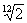
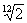
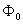
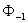
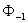
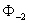
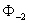
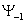
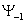

New bases for the processing of music in the
time-frequency dominion
Author:
Juan Manuel Vuletich
email: to
jmvuletich@sinectis.com.ar
L.U.745/92
Director:
Dra. Ana M. C. Ruedin
email: to
anita@dc.uba.ar
Year 2005
Department of Computation
Faculty of Exact and Natural Sciences
University of Buenos Aires
Abstract...................................................................................................................................................................................................
3
Summary......................................................................................................................................................................................................
3
Introduction.........................................................................................................................................................................................
3
Signal.........................................................................................................................................................................................................
3
Analysis...................................................................................................................................................................................................
4
Synthesis....................................................................................................................................................................................................
4
Analysis/Resíntesis.........................................................................................................................................................................
4
Musical scale..................................................................................................................................................................................
4
Location of signals in time and frequency.................................................................................................. 5
Teselado of the time plane - frequency.................................................................................................................... 6
Objective of present work.................................................................................................................................................
6
Used tools...........................................................................................................................................................
7
Conventional techniques for the time dominion -
frequency.................................................................. 8
Ways to represent signals..........................................................................................................................................
8
Transformed of discreet Fourier and transformed
of Fourier................................................................... 8
Wigner - Ville distribution.......................................................................................................................................................
10
Transformed of Fourier with window or
transformed of Gabor.......................................................... 10
Transformed wavelet continuous and its
discretización....................................................................................... 11
Transformed wavelet discreet dyadic................................................................................................................... 11
Wavelets M-ádicas.......................................................................................................................................................................
13
Bases optimized for each signal................................................................................................................................
14
"Mosaic arbitrary of the time plane - frequency
using local bases" (Bernardini/Kovacevic)....................................................................................................................................................................................................................
14
Summary of Conventional Techniques............................................................................................................................... 15
New wavelet discreet for music....................................................................................................................... 16
Mosaic of the time plane - frequency..................................................................................................................... 17
Description.........................................................................................................................................................................................
17
Parameters of mosaic...................................................................................................................................................................
18
Construction of mosaic...............................................................................................................................................................
18
Elementary functions...............................................................................................................................................................
20
Adjustment of the elements of the base to the
mosaic of plane........................................................................................................... 20
Wavelet................................................................................................................................................................................................
20
Function of Scale.............................................................................................................................................................................
22
"Function of Cleared up Scale"......................................................................................................................................................
23
Algebraic properties of bases............................................................................................................................. 25
Correlation between elements.....................................................................................................................................................
25
Ortogonalización of the elements of different
bands........................................................................................................... 26
Ortogonalización of the elements of a same
band......................................................................................................... 26
Ortogonalización against displacements to
uneven distances............................................................................................ 27
Approach of the mosaic by rationals...................................................................................................................................
28
Ortogonalización against displacements to even
distances................................................................................................ 28
Construction and final ortogonalización of
base.............................................................................................. 30
Obtained results..................................................................................................................................................................
32
Conclusions.......................................................................................................................................................................................
35
Future Works..........................................................................................................................................................................
35
Glossary.................................................................................................................................................................................................
35
Bibliography.........................................................................................................................................................................................
36
Conventional techniques for signal analysis and
processing in the Time-frequency domain plows not well adapted to
digital processing of music signals. This restricts the
features and quality of applications. To novel family of
wavelet-like bases allows to tiling of the Time-frequency plane that
is to better adapted to the musical scale. Audio This will
allow performance enhancements in all kinds of digital applications,
for example, pitch detectors, sound identification, musical comedy
instruments and effects processors.
The conventional techniques for analysis and signal processing in the time dominion - frequency does not adapt well to the digital signal processing of audio, in music individual. This limits the possibilities and the performance of the applications. A novel family of pseudo wavelets allows to a mosaic of the plane of time - frequency better adapted to the characteristics of the musical scale. This will allow to improve the performance of all class of applications of audio, being able to be applied for example to converters of audio to MIDI (pitch detectors), identifiers of sounds, construction of musical instruments and, processors for recording studios.
In the area of the discreet signal processing the processing of musical sounds stands out, to have music properties particular, different from those of other types of signals (p. ej. images). The processing of music has important practical applications, that they go from the musical production (tools for musicians and engineers of recording), to products for consumers (equipment of music, software and applications for distribution and reproduction of music in personal computers).
Within the ample field of the processing of sound and music, this work is centered in techniques to transform the signals, expressing them in bases with certain wished properties. It interests to us to represent musical signals so that each coefficient expresses the power content of the signal in a small interval of time and frequencies. This allows to modify the signal, for example heightening or reducing certain components (p. ej. musical notes), at certain moment.
Let us begin defining some terms, and their meaning (in the context of this work).
Signal
This work treats solely on discreet signals
unidimensionales that they correspond to segments of digitized music.
If the signals to use are muestreadas frequently of sampling  and they do not contain energy in superior
frequencies a
and they do not contain energy in superior
frequencies a  , then the theorem of Nyquist (Nyquist 1928,
Shannon 1949) guarantees then that the original signals can perfectly
be reconstructed. As it will be seen more ahead, a signal of
finite duration cannot fulfill the hypothesis of the theorem. A
phenomenon called aliasing when reconstructing appears then, but if
, then the theorem of Nyquist (Nyquist 1928,
Shannon 1949) guarantees then that the original signals can perfectly
be reconstructed. As it will be seen more ahead, a signal of
finite duration cannot fulfill the hypothesis of the theorem. A
phenomenon called aliasing when reconstructing appears then, but if  is sufficiently high,
aliasing can be ignored. This happens in compact disc and all
the digitalis formats audio: the recordings last finite.
is sufficiently high,
aliasing can be ignored. This happens in compact disc and all
the digitalis formats audio: the recordings last finite.
Analysis
To analyze signal consists of to apply algorithm that extracts information in form of parameters, that turn out useful to describe it, or to know some aspect her. For example, vúmetro (that shows the intensity of the signal throughout the time), or an analyzer of phantom (that shows to the evolution of the frecuencial content throughout the time).
Synthesis
To synthesize a signal consists of generating a signal from certain parameters. For example, a sintetizador of music generates sounds based on parameters like the note to touch, intensity, stamps, etc.
Analysis/Resíntesis
Analysis/Resíntesis, or Processing in the Transformed Dominion is to apply one transformed reversible one, to extract parameters, to operate on them and to synthesize a new signal related to the original one (but probably nonidentical).
Examples of this are the equalization, the processing of dynamic range by bands (like the Dolby system), the techniques used by the engineers of recording to mix and to make the final adjustments for discs (masterización), or the data compression. To work in the transformed space allows to choose a base of representation of the signal in which they can obtain the looked for effect manipulating coefficients just a few; facilitating itself to know which are the excellent coefficients, and how to modify them. To express the signal in a space of this type allows some of the following applications:
· To eliminate coefficients, to eliminate noise.
· To multiply them by factors, or curves in the time or the frequency (to heighten or to eliminate certain components).
· To modify coefficients (that were perhaps zero) to enrich the timbre.
· To regroup them or to disturb them (to separate sounds and to process them separately).
· Cuantizar and/or to eliminate coefficients, to save storage space (data compression).
Musical scale
The chromatic musical scale used by all old western music is descending of the Pythagorean scale of the Greeks. the construction of the scale is based on several characteristics of the human system auditory that occur when combining sounds of defined height.
First it is the form in which our ear interprets the altitude difference between two listened to sounds one after the other. For example, the altitude difference which we perceived between a sound of 100Hz and one of 200Hz is the same one that the one that we perceived between a sound of 400Hz and one of 800Hz. (Hertz is the abbreviation of Hertz, the standard unit of frequency. Hertz is equivalent to a cycle per second.) This relation occurs between two sounds that have the one double of frequency that the other, and the flame eighth.
On the other hand, if two (or more) sounds sound the unisonous one, we say that they form an agreed one. If the frequencies of the sounds are next, or one she is next to a multiple whole number of the other, appear "the beaten" calls, I pretend fluctuations in the intensity of the perceived sound, that must both to a phenomenon of interference between original sounds. This happens when the difference of frequencies is between 1 and 15Hz. This effect takes advantage of the tuner pianos, who sharpens each cord being based on just sharpened, looking for to make disappear the milkshakes when they sound meetings.
If the frequencies of the sounds that form the agreed one are next, but not as much (its difference is greater to 20Hz), it appears the dissonance. The frequency of appearance of the milkshakes is the difference of frequency between the sounds. When this difference is greater to 20Hz, its frequency of appearance is audible, and the milkshakes are based generating a new timbre. Then we listened to a harshness sensation. It is easy to feel the dissonance simply pressing several neighboring keys of a piano with the fist.
Finally, when the reasons between the frequencies of the sounds of the agreed one are fractions with denominating numerator and small, we listened to a consonancia. The oscillations of the different sounds agree each few cycles, forming a periodic signal. The sounds are based on only one, and the result is pleasant to the ear. Examples of this are the used intervals more in music: the third greater one (5/4), the fourth perfect (4/3) and fifth perfect one (3/2).
The first point before exposed shows to us that the
progression of the frequencies of notes is not linear but logarithmic.
Looking for useful frequencies to generate consonancias, the
"scale of greater right intonation" had 7 notes by eighth, constructed
like simple fractions of a fundamental note (arbitrary) with the
following sequence: 1, 9/8, 5/4, 4/3, 3/2, 5/3, 15/8, 2.
This scale evolved later until the present temperada chromatic
scale, spread by J. S. Bach in century XVII, and that has 12 notes or
halftones by eighth, with the following reasons between the frequency
of each note and a note bases arbitrary: 1, ( )2,
(
)2,
( )3,
(
)3,
( )4,
(
)4,
( )5,
(
)5,
( )6,
(
)6,
( )7,
(
)7,
( )8,
(
)8,
( )9,
()10,
(
)9,
()10,
( )11,
2. These irrational approaches of the
simple fractions generate milkshakes, but the approaches are
sufficiently good like so that the average ear it does not detect
them. The reason to leave the "right intonation" (simple
fractions) and to replace it by irrational approaches was to be able
to construct instruments of fixed refining (for example of keyboard,
like the key or the piano) that could be called on in scales based on
anyone of notes with no need to introduce notes with different
frequencies for each scale. The tuner of pianos balances the
milkshakes in all the pairs of notes, and of that way he constructs
the temperada scale. (For more details, ], [ NUÑ/92 ], or any
good book of Musical Theory or Engineering of Sound are advised to
consult [ OLS/67.)
)11,
2. These irrational approaches of the
simple fractions generate milkshakes, but the approaches are
sufficiently good like so that the average ear it does not detect
them. The reason to leave the "right intonation" (simple
fractions) and to replace it by irrational approaches was to be able
to construct instruments of fixed refining (for example of keyboard,
like the key or the piano) that could be called on in scales based on
anyone of notes with no need to introduce notes with different
frequencies for each scale. The tuner of pianos balances the
milkshakes in all the pairs of notes, and of that way he constructs
the temperada scale. (For more details, ], [ NUÑ/92 ], or any
good book of Musical Theory or Engineering of Sound are advised to
consult [ OLS/67.)
Location of signals in time and frequency
The signals can imagine of diverse ways, considering them vectors and using different bases from vectorial spaces. The usual temporary representation uses the canonical base. Another fundamental representation is the frecuencial, obtained by means of the transformed one of Fourier, and that uses a base formed by sines and cosines of different frequencies.
The principle of uncertainty of Heisenberg is a theorem on certain pairs of mathematical operators. In quantum mechanics it is applied to the position and moment of any particle. In signal processing it is applied to the temporary and frecuencial representation of any signal. Both are particular cases of pairs of operators who fulfill the hypotheses of the theorem. In quantum mechanics, it means that it is not possible to determine simultaneously the position and speed (or position and energy) of a particle. In signal processing, the uncertainty principle establishes a level to the location in the time and the frequency of any signal. This means that if looks for to concentrate most of the energy of the signal in a possible the most reduced interval of time and in a possible the most reduced interval of frequency, an improvement in a dominion implies a loss in the other.
Additionally, to have compact support in one of the dominions (time or frequency) implies to have infinite support in the other. That is that is not possible to construct a signal that is different from only zero in a time interval, and that their frecuencial content is different from only zero in an interval of frequencies. This property is applied so much to continuous signals as discreet. For more details it see [ STR/97a ], p.67 and p.432.
Teselado of the time plane - frequency
He is usual to work with the time plane -
frequency, that expresses the time in the horizontal axis and the
frequencies in the vertical. As it is dealt with digitized
signals, the interval of frequencies to consider is limited.
Normally it is spoken of the time plane - frequency, although
in fact works with muestradas signals and a subgroup of the plane (a
horizontal band that includes the frequencies between 0 and  ). A partition becomes then of this
plane in small portions, all of equal area, called teselado, tiled or
mosaic (in English "tiling"). To each teselado one corresponds
(or more) bases or forms to represent signals. And to each
floor tile a coefficient in that representation of a signal
corresponds. In all the cases, for a certain sampling fraction,
the amount of floor tiles by time unit is the same one. This
allows to maintain constant the amount of coefficients to use to
represent the signals, requirement for the existence of bases.
When it express a signal in a base whose elements adapt to a
mosaic of the plane, the frequency is said that express in the time
dominion -. Many usual forms to represent the signals can see
like mosaics of the time plane - frequency. Some of these are
the temporary representation, the discreet transformed one of Fourier,
transformed of Fourier with window (or transformed of Gabor) and
transformed wavelet discreet.
). A partition becomes then of this
plane in small portions, all of equal area, called teselado, tiled or
mosaic (in English "tiling"). To each teselado one corresponds
(or more) bases or forms to represent signals. And to each
floor tile a coefficient in that representation of a signal
corresponds. In all the cases, for a certain sampling fraction,
the amount of floor tiles by time unit is the same one. This
allows to maintain constant the amount of coefficients to use to
represent the signals, requirement for the existence of bases.
When it express a signal in a base whose elements adapt to a
mosaic of the plane, the frequency is said that express in the time
dominion -. Many usual forms to represent the signals can see
like mosaics of the time plane - frequency. Some of these are
the temporary representation, the discreet transformed one of Fourier,
transformed of Fourier with window (or transformed of Gabor) and
transformed wavelet discreet.
In many cases, the plane is divided in a set of horizontal strips, each one of a floor tile of wide, and many floor tiles of length. These strips denominate "analysis bands".
As it were already said, it is theoretically impossible simultaneously to obtain a function with compact support in the time and the frequency. This means that the only mosaics of the plane, for which it is possible to obtain bases that adjust exactly to them, are those that divides to the plane only in time (like the temporary representation) or only in frequency (transformed of Fourier and the cosine).
In all the representations that try temporary and frecuencial location, in fact each element of the base occupies many (in fact, infinite) floor tiles, and they are solely trims in a floor tile in which they concentrate most of its energy. In addition, when improving the concentration of the energy in a dominion gets worse it in the other. This means that we can choose to respect better the location in a dominion, without modifying the mosaic, but affecting the location in the other dominion.
Objective of the present work
In general, the most modern and successful techniques to represent signals in the time dominion - frequency uses wavelets. For example, in Image processing, the discreet bases wavelets (dyadic) have been used with great success in analysis (detection of edges and objects, classification of textures, etc.) and in processing (for example in compression, surpassing to the DCT, or discrete cosine transform used by the standard JPEG).
Nevertheless, in musical signals, and of sound; the bases constructed with wavelets discreet have not been the same successful. For analysis (where characteristics of the signal study, but it is not tried to reconstruct it), transformed wavelet continuous discretizada gives the best results. Nevertheless, for the processing, wavelets discreet has not been an improvement as opposed to older techniques. For example, the most successful technique of compression of audio (format MP3) uses the MDCT, or modified discrete cosine transform; and most of the applications of music production they use variations of the STFT. Discreet the attempts to use wavelets instead of them have not rendered fruits. One thinks that this happens because the wide one of each band of analysis cannot adjust appropriately to the characteristics of music (v.g. the musical notes).
The objective of this work is to present/display bases pseudo wavelet of the space of muestreadas signals l2(Z) that are from utility for the treatment of musical sounds. The coefficients to represent a signal in these bases will be located in the time and the frequency. This means that if the signal is reconstructed, modifying previously the value of a coefficient, then the effects of this modification will be limited a short temporary interval, and only to a rank of frequencies. Reversible one to the time plane appears then one transformed - frequency, that adapts to a mosaic of the plane designed from the musical scale.
In relation to the conventional dyadic discreet restrictions of wavelets, in [ TOR/99 ], pág. 22, Torresani says: "The connection between continuous and discrete wavelet systems is not completely understood.... The multirresolution approach seems to be also extremely constrained by algebraic arguments, which should be developed to further." ("the connection between the discreet and continuous systems of wavelets is not included/understood totally... The approach multiresolution seems in addition to be extremely restricted by the algebraic arguments, that must be developed still more."). And in [ DAU/92 ], pág. 16, Daubechies says: "Although the constructive method for orthonormal wavelet bases, called multirresolution analysis, rational dog work only ifto 0 is, it is an open question to whether there exist orthonormal wavelet bases (necessarily not associated with to multirresolution analysis), with good Time-frequency localization, and with irrational to0." ("Although the constructive method for ortonormales bases wavelet, call analysis multiresolution, only can work if to0 (the reason between the wide one of 2 neighboring bands) he is rational, it is an open question if ortonormales bases exist wavelet (necessarily not associated with an analysis multiresolution), with good temporary and frecuencial location, and with a0 irrational."). It is also remarkable that in the cover of [ STR/97a ] appears pentagrama musical with several notes, like metaphor from wavelet dyadic. But of 12 possible notes, it only appears the Do note in 5 eighth different ones. That is, notes whose frequency is 2isf0 for some f0 with whole i. This only already suggests the urgent necessity to generalize the technique to be able to also represent other notes of the scale!
Being in agreement with these authors in the necessity
of new more general approaches, this work does not use the classic
method to construct wavelets discreet (the call "analysis
multiresolution", or MRA), but that works directly with explicit bases
represented like vectors column in matrices, looking for new bases of l2(Z), with the wished characteristics (good frecuencial
location, and to0 =  ). The cost is a consumption greater of
memory and processor in the computers (to store the complete matrix,
and to solve the system of linear equations associated), but the
advantage is a greater freedom to look for the wished bases. As
result bases are constructed that are not strictly wavelets (that is
that is not transferings and expansions of an only basic function).
The result of this discreet work is a new family of pseudo
wavelets that promises to be more appropriate for musical
applications.
). The cost is a consumption greater of
memory and processor in the computers (to store the complete matrix,
and to solve the system of linear equations associated), but the
advantage is a greater freedom to look for the wished bases. As
result bases are constructed that are not strictly wavelets (that is
that is not transferings and expansions of an only basic function).
The result of this discreet work is a new family of pseudo
wavelets that promises to be more appropriate for musical
applications.
Used tools
In order to carry out east work, the atmosphere of programming Squeak Smalltalk was used ( www.squeak.org ). It is an atmosphere OO pure, tensile and of open source (they open source). One implemented a set of classes for treatment of matrices and bases of RN. Also the support necessary was implemented to graficar functions and vectors, and to study its properties.
Ways to represent signals
As it were already said, the signals to
represent are successions  with
with  finite, and the space to which belongs
denominates l2(Z). The different forms in that the signals can be
represented are the different bases that space l2(Z) admits.
Of the conventional techniques for analysis and signal
processing in the time dominion - frequency, those that are
transformed reversible correspond to bases of this space, and provide
different tiled mosaics or from the time plane - frequency.
finite, and the space to which belongs
denominates l2(Z). The different forms in that the signals can be
represented are the different bases that space l2(Z) admits.
Of the conventional techniques for analysis and signal
processing in the time dominion - frequency, those that are
transformed reversible correspond to bases of this space, and provide
different tiled mosaics or from the time plane - frequency.
The first base to consider is the canonical base. The elements of this base are vectors of infinite dimension with an only element different from zero, that has value one. The musical signals are expressed normally in this base, for example in a compact disc of audio, or in file formats of audio simple, like wav and the AIFF. The canonical base can be seen like a possible mosaic of the plane:

In this figure (and the 3 following ones) x-axis
corresponds to the time and the axis and the frequency. Let us
consider a signal of N = 128 samples (real). One is to a
temporary interval of N samples, and frequencies from zero to the
Maxima representable (that is  where
where  it is the used frequency of sampling).
The time plane - frequency is divided in vertical strips. Each element of the
base includes all the representables frequencies, and a minimum
temporary interval. The temporary resolution is Maxima (and is
of 1/
it is the used frequency of sampling).
The time plane - frequency is divided in vertical strips. Each element of the
base includes all the representables frequencies, and a minimum
temporary interval. The temporary resolution is Maxima (and is
of 1/  ), the frecuencial resolution is null.
), the frecuencial resolution is null.
Next some of the conventional techniques are described, showing that those that is useful for the analysis are not good for the processing, and those that is applicable to the processing they present/display other disadvantages. A detailed description of each one will be avoided excessively, being all of them you decipher in Literature in exhaustive form.
Transformed of discreet Fourier and transformed of Fourier
The transformed one of Fourier (FT) is the technique of older frecuencial representation, and has some important problems, but also has virtues that some of which they appeared later lost.
One reversible one is transformed. Its discreet version (DFT) considers a signal of muestreada finite duration. This implies that the frequencies are discretizadas and that the interval of possible frequencies is limited. The DFT generates a new representation of the signal that uses the same amount of coefficients that the original one, and is nonredundante. Therefore it generates a base of the space of the represented signals. As it separates the frequencies, frequency generates a mosaic of the time plane -. It is deciphers, for example, in [ ESP/02 ].
Now we have N/2 = 64 strips horizontal, all of equal
wide, and as long as the signal. This means that we have
frecuencial resolution Maxima (2  / N) equal in all the
bands, and null temporary resolution. We represented then the
signal with half of the coefficients (N/2), but are complex
coefficients, and the amount of information is the same one.
/ N) equal in all the
bands, and null temporary resolution. We represented then the
signal with half of the coefficients (N/2), but are complex
coefficients, and the amount of information is the same one.
well is known that the main disadvantage of the transformed one of Fourier is the complete lack of temporary location of the obtained components. The frecuencial resolution is the Maxima possible, but to the supposition that the temporary signal is periodic, it is also considered that all the components are present at any moment. On this problem, J. Ville (that proposed the use of the Wigner - Ville Distribution as a "temporary density - frecuencial") said (to see [ TOR/99 ], pág. 1):
"... the representation is mathematically correct
because the phases of the tones close to To have managed to suppress
it by interference phenomena before it is heard, and to enforce it,
again by interference, when it is heard... However this is to
deformation of reality: heard when the To is not, it is simply
because it there are not been played yet... "
("the representation is mathematically correct because the phases of the tones near A (one note that sounds at a certain moment) are successful in suppressing it by means of interference phenomena before is listened to it, and reinforcing it, again by interferences, when listening... If embargo, this is a deformation of the reality: When the note is not listened to, it is simply because still it was not touched...".)
This means that they appear component espúreas that they partially cancel to other components, but in reality neither they nor the component to cancel would have to appear. This type of phenomena obstructs the analysis, because it suggests the existence of characteristics in the signal that in fact do not exist.
The application of the DFT presents/displays an additional disadvantage actually, consequence to suppose that the signal is stationary (periodic), and that the transformed segment corresponds to an exact amount (it finds out) periods of the same one. If this supposition is false (actually it is it almost always), the obtained result is the transformed one of a different signal: a periodic signal obtained concatenating an infinite amount of repetitions of the transformed segment. This problem appears because many implementations of the FFT (transformed fast of Fourier, an algorithm that calculates the DFT) require that the signal has size 2n for some whole n, and what it becomes is to trim the signal (taking a nonwhole amount from periods) or to complete it with zeros. Also it happens because many applications divide the signal of entrance in segments of an arbitrary size (to process the segments), without making no consideration of the signal in individual that is being processed at every moment. Anyway, with choosing better the size of the segment to transform it is not sufficient: the entrance signal normally is not periodic. It is in these cases where a purely frecuencial representation is not appropriate. The frecuencial content of the signal is changing with time. A representation in time is precise - frequency. These problems, often ignored actually, can take to obtain completely erroneous results. For more details, ], p.98 to 107 see [ BRI/88.
Wigner - Ville distribution
The Wigner - Ville distribution (WVD) dates from 1948 and is historically is the first technique that it looks for to obtain data on a signal, obtaining simultaneously temporary and frecuencial location. She was propose by J. Ville like a "frecuencial temporary density". When is applied it to pure oscillations, it provides an optimal location. Good behavior also stays to signals that are certain simple transformations of an only pure oscillation (p. ej. chirps linear). But more complex signals appear problems when analyzing, for example the sum of simple signals. In these cases the result is not the sum of the WVD of those, but that appear "terms of interference". Really, the WVD is not linear. In [ TOR/99 ] is one more a detailed description, and are examples where the alinealidad is in evidence.
Versions exist continuous and discretizaciones (necessary to work in a computer) which they serve for the analysis (with different particularitities in each case), but do not allow the reconstruction of the signal.
In [ NEW/97 ] becomes a comparison between the discretizada WVD, the STFT and the discretizada CWT applying them to the analysis; concluding in the advantages of the CWT on the other methods.
Transformed of Fourier with window or transformed of Gabor
The continuous transformed one of Gabor or transforming of Fourier with window (STFT), and their discreet version, is technical to equip with temporary location the transformed one of Fourier. ], [ DAU/92 ] and [ ESP/02 are described in [ TOR/99 ].
The continuous transformed one one is transformed reversible one between L2(R) and Ls2(R2). Actually discretizadas versions are used always.
An only temporary window for the analysis in all the bands is used. This means that the temporary resolution and the frecuencial resolution are constant, and cannot adjust to create bands of different wide. the result of this is a mosaic of the time plane - frequency with all the rectangular and identical floor tiles, forming a drawn into squares species of. The STFT is a redundante representation, but representations exist that share many of their properties, and that are bases. One of the most used is the transformed MDCT or of the modified cosine, used by the method of compression of audio MP3.
These representations present/display other disadvantages. Within a window problems similar to those of the DFT occur, because it is considered that (within the window) the signal is stationary (periodic). This means that if appears component whose frequency is not multiple as large as the window, they appear component espúreas in the result. This problem often occurs when using the DFT and it was already commented. The different alternatives for the window try to palliate this problem (with certain success). Also they appear problems if in the search of a frecuencial resolution good, appropriate to identify low frequencies (serious sounds), great temporary windows are taken. When being used the same window for the high frequencies, is possible that very short sounds do not get to identify themselves appropriately, worsening the problems that share with the transformed one of Fourier.
In [ NEW/97 ] becomes a comparison between the discretizada WVD, the STFT and the discretizada CWT applying them to the analysis; concluding in the advantages of the CWT on the other methods.
Transformed wavelet continuous and its discretización
Transformed wavelet continuous (CWT) was propose by Grossman and Morlet like alternative to the transformed a continuous of Gabor, and is described in [ TOR/99 ]. One continuous one to the time dominion is transformed - frequency. An only function is taken, call wavelet, that contains most of its energy located in a temporary interval and a frecuencial interval. The first election is the call wavelet Morlet, one Gaussian one modulated, by its optimal location in the time and the frequency. In [ DAU/92 ], p.76 is a description, in the context of the redundantes discretizaciones called "frames" (that do not form bases) of the continuous transformed one. This wavelet is transferred in the time and simultaneously expanded (that is transferred in the frequency). Each scale or expansion modifies the frequency in which the phantom is centered, and then each expansion is associate to "a central" frequency. The transformed one measures for every moment and each frequency (and its corresponding expansion) the correlation between the original signal and wavelet transferred and expanded.
In the implementations for computers, discretiza time and scale. How fine it must be the sampling in each axis depends on the application, but also it must adjust carefully to the characteristics of temporary and frecuencial location of wavelet selected. A map of the distribution of the energy of the signal in the time and the frequency is constructed therefore, with very good resolution, approaching at the beginning of uncertainty of Heisenberg. In certain [ NEW/97 ] describes wavelets developed for the analysis using the CWT, Harmonic Wavelets calls (Harmonic Wavelets).
Choosing suitably wavelet, it is possible to fit the representation to the musical scale. Anyway, these techniques are useful for the analysis but it does not stop the processing, because the discretizaciones give very redundantes representations of the signal. Although this does not prevent the reconstruction, makes difficult the processing in the time dominion - frequency, because to the salary redundancy, different sets from coefficients will generate the same signal, and will not be easy to determine what manipulation of the coefficients is the one that there is to make to obtain a result in individual. For example, an excessively fine sampling of the time plane - frequency suggests would be possible to reconstruct a signal affecting temporary and frecuencial an interval extremely small, smaller than the limit imposed by the uncertainty principle. It is clear that the results will disappoint the user: the magic does not exist. This technique is deciphers in [ ESP/02 ] and [ NEW/97 ]. In [ NEW/97 ] becomes a comparison between the discretizada WV, the STFT and the discretizada CWT applying them to the analysis; concluding in the advantages of the CWT on the other methods. In [ OLM/99 ] details to an application to the music analysis and automatic recognition of melodías. In this continuous work a family of wavelets specially adapted to the analysis of called music introduces itself wavelet Log-Morlet.
Transformed wavelet discreet dyadic
Transformed wavelet discreet usual (dyadic DWT, or DDWT) is not a discretización of the CWT.
Two continuous fundamental functions are used:
the scale function  and wavelet  . Like first step, a certain function is
taken from scale
. Like first step, a certain function is
taken from scale  . The main property of this function is
that moving it by whole multiples of certain
. The main property of this function is
that moving it by whole multiples of certain  forms an orthogonal base
of certain subspaces of L2(R). In individual, constant,
linear functions can imagine, and in some quadratic and polinómicas
cases of greater degrees. Let us call to this space V0. Let us consider the
function now
forms an orthogonal base
of certain subspaces of L2(R). In individual, constant,
linear functions can imagine, and in some quadratic and polinómicas
cases of greater degrees. Let us call to this space V0. Let us consider the
function now  , that is
, that is  expanded by a factor 2:
expanded by a factor 2:  (x) =
(x) = (x/2). The displacements of they form a base of a called space V-1. Now it enters scene
(x/2). The displacements of they form a base of a called space V-1. Now it enters scene  . , and its displacements by whole multiples of 2
. , and its displacements by whole multiples of 2  forms a base of a called
space V-1. By the
form in which they are constructed
forms a base of a called
space V-1. By the
form in which they are constructed  and
and  (to be used together) is
that V0 = W-1 Å V-1. This can be
repeated, obtaining  and
(to be used together) is
that V0 = W-1 Å V-1. This can be
repeated, obtaining  and  such that V-1 = W-2 Å V-2. That is, V0 = W-1Å (V-2 Å W-2). Repeating this k
times, we have V0 = W-1 Å (... Å (V- k
Å W- k)).
such that V-1 = W-2 Å V-2. That is, V0 = W-1Å (V-2 Å W-2). Repeating this k
times, we have V0 = W-1 Å (... Å (V- k
Å W- k)).
The calculation of the transformed one consists of
starting off of a sequence of coefficients that correspond to the
original function continuous, but expressed in the base formed by
displacements of  . Then, by convolución with two filters
(associate a
. Then, by convolución with two filters
(associate a  and
and  ) and subsampling, expresses the signal in the
base formed by
) and subsampling, expresses the signal in the
base formed by  and . This is repeated for the coefficients
of
and . This is repeated for the coefficients
of  , to express the signal in the base formed by
, to express the signal in the base formed by  ,
,  and
and  . This repeats k times, and the signal
is expressed in the base formed by
. This repeats k times, and the signal
is expressed in the base formed by  ... and
... and  . The become one is to revert all the
steps using two appropriate filters, and sobresampling putting in
zeros.
. The become one is to revert all the
steps using two appropriate filters, and sobresampling putting in
zeros.
In order to apply this transformed to discreet signals instead of continuous functions, the initial sequence of coefficients is directly the signal to transform. This must consider choosing wavelet to use.
These techniques avoid the cost of storing the bases of the different spaces; and they are very efficient in the calculation: if the amount of K bands is constant, we have O(n) with n the size of the signal.
If the properties of temporary and frecuencial location
of  and they are appropriate, the result is a mosaic of
the plane like which it is in the figure, where the higher frequency
bands have better temporary resolution and those corresponding ones to
the lowest frequencies have better frecuencial resolution.
and they are appropriate, the result is a mosaic of
the plane like which it is in the figure, where the higher frequency
bands have better temporary resolution and those corresponding ones to
the lowest frequencies have better frecuencial resolution.
The elements of the base and the coefficients are real. In order to represent a signal of N temporary samples they are used N coefficients.
As we already said, the representations are nonredundantes and generate bases. Then they are transformed reversible. The temporary and frecuencial location depends on wavelet used, but in no case it will be better than one eighth. This means that each band includes at least 12 notes of the scale.
In this figure one is to the mosaic corresponding to a
base constructed with 6 bands or expansions of wavelet, and the
function of scale. We again have 64 floor tiles of equal area.
The frecuencial resolution is of one eighth: each band  of frequencies goes from
certain even
of frequencies goes from
certain even  and includes a wide one
("bandwidth") , the temporary resolution (and the length of
each floor tile) are
and includes a wide one
("bandwidth") , the temporary resolution (and the length of
each floor tile) are  , and it maintains the equal amount of floor
tiles and areas to those of the canonical base. The temporary
resolution improvement for high frequencies, and gets worse for low
frequencies. This turns out desirable to process sound, but the
disadvantage is that our ear far better has a frecuencial resolution
that one eighth (and a temporary resolution more poor man, because our
ear also must respect the principle of uncertainty of Heisenberg).
, and it maintains the equal amount of floor
tiles and areas to those of the canonical base. The temporary
resolution improvement for high frequencies, and gets worse for low
frequencies. This turns out desirable to process sound, but the
disadvantage is that our ear far better has a frecuencial resolution
that one eighth (and a temporary resolution more poor man, because our
ear also must respect the principle of uncertainty of Heisenberg).
Additionally it must consider that to change the election of wavelet affects the temporary and frecuencial location of the elements, modifying the form in which they adjust to the mosaic of the plane; but the mosaic is always the same one. This even happens with wavelets discreet of Daubechies, that has very ample support frecuencial, and temporary support compact but always greater than a floor tile. In applications in which it interests specially the teselado one of the plane it is important to use wavelets that they adjust to the each best floor tile the possible thing.
This technique is deciphers in detail in [ DAU/92 ], [ STR/97a ], [ STR/97b ], [ TOR/99 ] and [ ESP/02 ].
Wavelets M-ádicas
The Wavelets M-ádicas is a generalization of the dyadic DWT, and allows greater flexibility in the balance between temporary and frecuencial resolution. They generate mosaics of the plane.
Wavelets M-ádicas looks for to increase the frecuencial resolution at the cost of the temporary resolution. This is desirable, but the way in which they do it is in each iteration of the algorithm to divide to the phantom available in m bands of equal wide. Soon, the procedure is repeated on the inferior band just generated. This repeats so many times successively as it is desired (and it allows the length of the signal). The applied transferings and subsamplings are always whole. Therefore it is not possible to obtain the balance between necessary temporary and frecuencial resolution, for example, to analyze the tones of a musical signal.

The example shows to the corresponding mosaic a.m. = 4, iterando the algorithm 3 times. We again have 64 floor tiles of equal area that in the canonical one. We have neighboring bands of equal wide, and also we see neighboring bands where one has wide an m times greater than the other. Our ear does not work this way.
Like in the dyadic DWT, the election of wavelet affects the temporary and frecuencial location of the elements of the base, and its adjustment to the mosaic, without modifying the mosaic in himself.
Bases optimized for each signal
Diverse works published and investigation in course exist on the problem to choose a base specially adapted to the signal to represent. The looked for objective is to choose a base that allows to diminish the amount of coefficients necessary to represent certain signal. The base weapon choosing itself elements of a dictionary of elements.
Between the techniques of this type we can mention "Matching Pursuit" (S. Mallat and Z. Zhang), "Best Basis" (R. Coifman and V. Wickerhauser) and "Basis Pursuit" (D. Donoho). They are you briefly decipher in [ STR/97a ], pág. 85.
These techniques generate bases. Then they are transformed reversible. Their main applications include the analysis of signals, and the compression; but not the processing in general. The reason of this is that the bases of this type lack "ecuanimidad" and favor the reconstruction of certain signals (those that adjust better to the base). Then the type of operations is conditioned that is easier to apply. For example, to be used to construct a ecualizador (that allows to fit the level of the sound in frequency bands), we would have a ecualizador whose bands change according to the signal and then they allow different types from equalization for different types from signals.
"Mosaic arbitrary of the time plane - frequency using local bases" (Bernardini/Kovacevic)
In the article with this name ("Arbitrary Tilings of the local Time-Frequency plane using bases"), ([ BER/99 ]) Bernardini and Kovacevic develops an interesting technique to obtain orthogonal bases that approximate any mosaic of the time plane - frequency. The result is really novel and promising. The attacked problem is similar to the one of this work, but he is still more general.
Instead of restricting itself to mosaics of the plane
where each band has constant a relative bandwidth, like the musical
scale; they allow practically any mosaic of the plane.
The way to specify the wished mosaic is the following one:
if we have a signal of N samples, know that we can represent it
in a Maxima resolution of N moments (temporary representation) or a
Maxima resolution of N/2 frequencies (using complex coefficients in
the dominion of Fourier, knowing that the signals are real).
Let us divide to the plane (fugitive in time and frequency to
the signal and the sampling) in N/2 horizontal strips and N vertical
strips. We have one grilla with N2/2 elements, and know that it is impossible to
have a representation with as much resolution. We know that any
rectangular area formed by N/2 elements of grilla will adjust at the
beginning of uncertainty (allowing to use real bases and
coefficients). This is exactly what this technique allows us to
do. We can specify any set of N floor tiles, each one formed by
N/2 elements of grilla, such that form a partition of the plane (that
are not hollow superpositions nor), and the form of each floor tile is
rectangular. We see then that the wide one (temporary interval)
of each floor tile is multiple of the sampling interval 1/  , and that the height (frecuencial interval) of
each one is multiple of 1/t, where t is the length of the signal in
seconds. With the propose
technique is automatically generated an orthogonal base that respects
the mosaic requested in approximate form.
, and that the height (frecuencial interval) of
each one is multiple of 1/t, where t is the length of the signal in
seconds. With the propose
technique is automatically generated an orthogonal base that respects
the mosaic requested in approximate form.
The approach is completely different from the one from this work, nevertheless, is valid to compare the obtained results. _ see the the graph of frequency response en frecuencia of the page 23 of [ BER/99 ], and compárese with the including more ahead in this work. Later a commentary is included also on the comparison.
Summary of Conventional Techniques
The following picture presents/displays in summarized form the most excellent characteristics of the techniques you decipher.
|
|
Proby ciona bases |
Transfor- linear mación |
It responds to manipulation of coefficients well (*) |
It provides temporary location |
It provides frecuencial location |
|
Transformed of Fourier and transformed of the cosine |
if |
if |
not (1) |
no |
if |
|
Wigner - Ville Distributions |
no |
not (2) |
- |
if |
if |
|
Transformed of Fourier with window and transformed of the modified cosine |
if |
if |
if |
bad (3) |
bad (4) |
|
Transformed wavelet continuous |
no |
if |
- |
if (5) |
if (5) |
|
Transformed wavelet discreet dyadic |
if |
if |
if (5) |
to regulate (6) |
to regulate (6) |
|
Transformed wavelet M-ádicas |
if |
if |
if (5) |
to regulate |
to regulate |
|
Optimized ortonormales bases for each signal |
if |
not (7) |